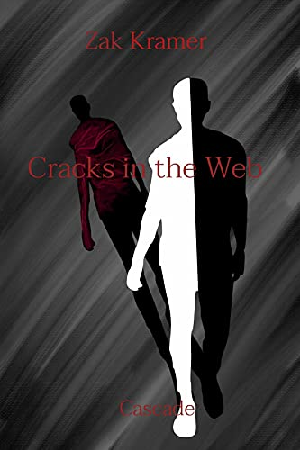
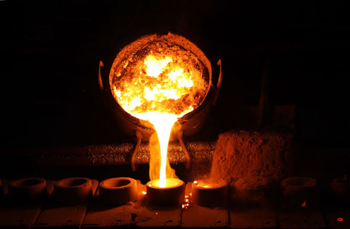
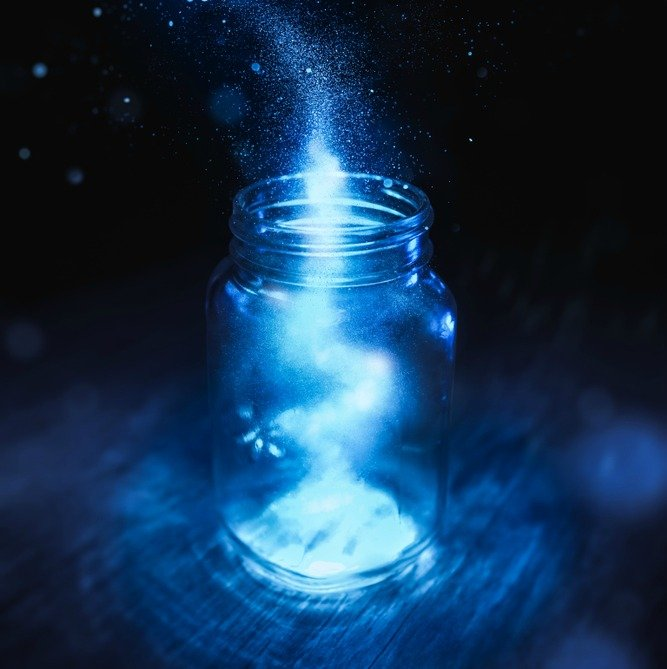

Cracks in the Web: Cascade - Novel: $24.99

Freedom after seven years. A boy, barely a man, awakens to a brave new world after freedom is earned through determination and tenacity. William arrives at the home of his family, the island nation of Norzon, in the city of Crosha. He has never been here, for his family were shipped off to safety before the horrors of the world could claim them like billions of others. Not that it helped them, for he was taken from the safe haven into the same chains he had just been freed from.
As he rediscovers the world, it soon becomes evident that it is smaller than most would like it to be. Struggling with the prejudice of a world scared of change. Struggling with his demons and that of his family’s, William must prepare to persevere. Persevere against those who would wish to drag him back into chains. Persevere whether he is ready or not.
Relying on memory, family members he’s never known, and the guilt of family friends he has never met. William will show them exactly what made him special enough to spare from death. He will depend on his own Nature given gifts, Eldritch blessings, a perturbed and inspired mind, and a fractured, singular view of an entire world.
A novel about moving on. A story of finding yourself. A tale of discovering who you are beyond the sum of your parts. A book of family, whether or not you chose them, or if they are given to you.
Cracks in the Web: Metallurgy - Novel: Winter 2022

Elias Fairen isn't versed in many languages. so when a riddle of "At home, one finds they've awakened" finds him. Forces beckon. As the rivers cascade and the world spins faster. Elias Fairen's eyes will be opened as he sees the strings. Of an epic show in which he has found to be merely a supporting character. With the help of a bard and a accompanied by a certain will, the invsible man will be seen making his own mark.
Tales From The Spire: Substance - Novella: Fall 2022

Like many others, the narrator of this book dreamt of frivolous and bombastic things before bed. Now, he finds himself set in a reality far graver than anything in his childhood implied. Forcing to cast it aside to provide for himself. He finds himself tested: his morals, his safety, his identity. With the only hope that the storm shall break, in time.